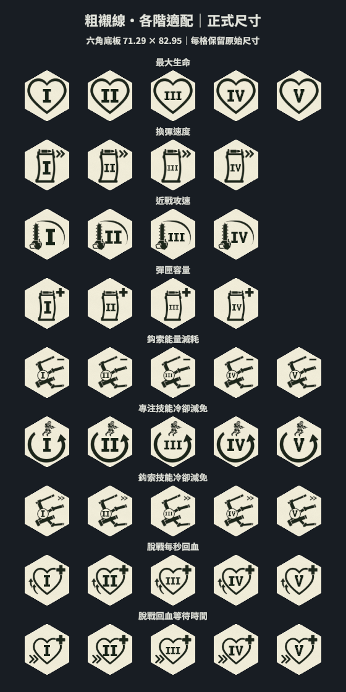

正式套用驗證：聚焦 17／17；完整回歸 981 通過、2 項既有範圍外失敗、1 略過。正式渲染與核准預覽完全相同。
原圖的 I 是厚直柱、上下方形橫槓。本次以此比例繪製專用向量字形；V 為同風格延伸設計，並非從提供的 I 原圖辨認出來。圖示原圖、角落符號、底板、文字中心與彈匣左右等距設定保留。
已依選定的「粗襯線／各階適配」套用正式 UI。目前正式版本為「各階適配」：I 能保留原圖的厚實尺寸，III 依原字框等比縮小。若要所有階級同字級，可切到「固定字級」，但單字 I 也會一起變小。請使用瀏覽器 100% 縮放查看。
